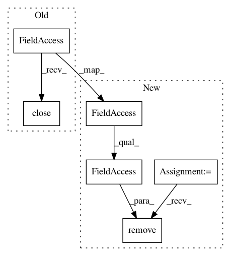

553a645f1d6f950bf1a36284bb13b5fc7c3bacdc,python/caffe/test/test_net.py,TestAllInOne,tearDown,#TestAllInOne#,327
Before Change
self.f.flush()
def tearDown(self):
self.f.close()
def check_net(self, net, outputs):
self.assertEqual(list(net.blobs["data"].shape), [1,1,10,10])
self.assertEqual(net.outputs, outputs)
After Change
self.f.close()
def tearDown(self):
os.remove(self.f.name)
def check_net(self, net, outputs):
self.assertEqual(list(net.blobs["data"].shape), [1,1,10,10])
self.assertEqual(net.outputs, outputs)
In pattern: SUPERPATTERN
Frequency: 3
Non-data size: 6
Instances
Project Name: BVLC/caffe
Commit Name: 553a645f1d6f950bf1a36284bb13b5fc7c3bacdc
Time: 2016-10-15
Author: dumont.guillaume@gmail.com
File Name: python/caffe/test/test_net.py
Class Name: TestAllInOne
Method Name: tearDown
Project Name: BVLC/caffe
Commit Name: 553a645f1d6f950bf1a36284bb13b5fc7c3bacdc
Time: 2016-10-15
Author: dumont.guillaume@gmail.com
File Name: python/caffe/test/test_net.py
Class Name: TestStages
Method Name: tearDown
Project Name: BVLC/caffe
Commit Name: 553a645f1d6f950bf1a36284bb13b5fc7c3bacdc
Time: 2016-10-15
Author: dumont.guillaume@gmail.com
File Name: python/caffe/test/test_net.py
Class Name: TestLevels
Method Name: tearDown